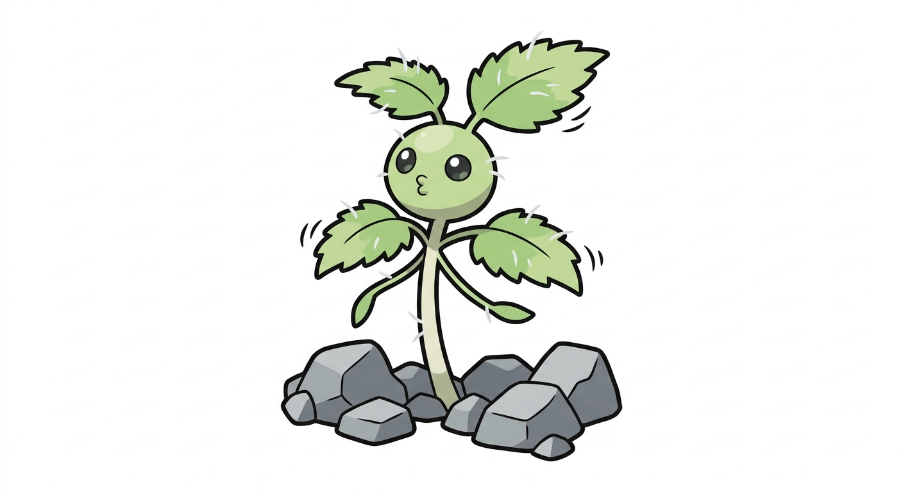

| Tipo | Erba |
|---|---|
| Abilità | Erbaiuto (prima) Velenopunto (speciale) |
| Sesso | 87,5% maschi · 12,5% femmine |
| Altezza | 0,4 m |
| Peso | 4,0 kg |
| Tasso di cattura | 45 (11,9%) |
| Uovo | Gruppi Erba e Coleottero 20 cicli (min. 5120 passi) |
| Pokédex regionali | Martemon #004 |
| Tasso di allevamento | Medio-lento |
| Esperienza base ceduta | 62 |
| Punti base ceduti | Totale: 1 — Att. Sp. 1 |
| Colore Pokédex | Verde |
| Affetto di base | 70 |
Ortighetto è un Pokémon di tipo Erba, starter della regione Martemon insieme alle linee di Acqua e Fuoco.
Si evolve in Ortica a partire dal livello 17, che a sua volta si evolve in Palortica dal livello 36.
Ortighetto è un germoglio d'ortica alto una spanna, con quattro o cinque foglie dal margine seghettato ancora morbide, di un verde chiaro che non ha ancora preso il colore scuro delle piante adulte. Dal fusto spuntano due braccine sottili e, in cima, una faccia tonda con occhi grandi e lucidi. Sulle foglie e sul fusto ha qualche peluzzo bianco, radi e ancora innocui: sono il segno della sua linea, e cresceranno con lui fino a diventare la ragnatela urticante di Palortica. Sta bene fermo tra le pietre della massicciata e, se non si muove, è difficile distinguerlo da un ciuffo d'erba qualsiasi.
Non vi sono differenze visibili tra maschi e femmine.
Permaloso e curioso, in parti uguali. Se qualcuno lo calpesta si offende a morte, si ritira tra le pietre e sta lì a fare il broncio; poi però lo segue per un pezzo di scarpata, a distanza, finché non ha ottenuto una scusa. Ama i treni: quando ne passa uno si volta a guardarlo e vibra tutto nella corrente d'aria, e i ferrovieri raccontano che i primi Ortighetto della stagione si contano proprio così, dai ciuffi che si girano lungo il binario. Non punge ancora, ma ci prova, e ci resta male quando non funziona.
Le scarpate e le massicciate della ferrovia tra Greco, Lambrate e lo scalo merci, dove il terreno è smosso di continuo e nessuno ci mette mai le mani. È la pianta dei margini fatta Pokémon: cresce dove la città passa e non si ferma. Vive in gruppetti fitti, che dall'alto di un cavalcavia sembrano una sola macchia verde.
Si nutre di luce e di terreno ricco: ceneri, pietrisco, tutto quello che le ferrovie lasciano dietro. Non gli serve altro, ed è per questo che cresce dove le altre piante non ci provano nemmeno.
Le debolezze del tipo Erba puro sono tante, e sulle scarpate della ferrovia il Volante non manca: un Ortighetto impara presto a stare basso.
Attacco Speciale già alto per un primo stadio e Velocità discreta: la linea crescerà verso l'attaccante speciale del trio, mentre lo starter Acqua fa da tank e quello Fuoco da velocista.
| Lv. | Mossa | Tipo | Cat. | Pot. | Prec. | PP |
|---|---|---|---|---|---|---|
| Inizio | Azione | Normale | Fisico | 40 | 100% | 35 |
| Inizio | Assorbimento | Erba | Speciale | 20 | 100% | 25 |
| 5 | Crescita | Normale | Stato | — | —% | 20 |
| 9 | Velenpolvere | Veleno | Stato | — | 75% | 35 |
| 13 | Fogliamagica | Erba | Speciale | 60 | —% | 20 |
| 17 | Paralizzante | Erba | Stato | — | 75% | 30 |
| 21 | Pizzicòn | Erba | Speciale | 60 | 100% | 20 |
| 25 | Semitraglia | Erba | Speciale | 80 | 100% | 15 |
| 29 | Sintesi | Erba | Stato | — | —% | 5 |
| 33 | Energipalla | Erba | Speciale | 90 | 100% | 10 |
| Mossa | Tipo | Cat. | Pot. | Prec. | PP |
|---|---|---|---|---|---|
| Protezione | Normale | Stato | — | —% | 10 |
| Solarraggio | Erba | Speciale | 120 | 100% | 10 |
| Sostituto | Normale | Stato | — | —% | 10 |
| Riposo | Psico | Stato | — | —% | 5 |
Il grassetto indica una mossa che ha il bonus di tipo (STAB) quando viene usata da un Ortighetto. Pizzicòn è la mossa di famiglia della linea: un pizzico di peli urticanti che ha il 30% di probabilità di avvelenare, e chi lo subisce si gratta per un'ora.
Versione Lambro — Un germoglio d'ortica che spunta tra le pietre della massicciata. Quando passa un treno si volta a guardarlo e vibra tutto nella corrente d'aria.
Versione Martesana — Se lo calpesti si offende e si nasconde tra le pietre. Poi ti segue lungo la scarpata, a distanza, finché non gli chiedi scusa.
Il verde che nessuno ha piantato. Tra la stazione di Lambrate, lo scalo merci e i binari che salgono verso Greco corre una striscia di terra che non appartiene a nessuno: scarpate, massicciate, muri di sostegno, recinzioni. È lì che cresce l'ortica, che ama il terreno ricco e rimescolato e non ha bisogno di essere invitata, e insieme a lei i rovi, i fiori spontanei e gli Ortighetto. Dai cavalcavia di via Cavriana e di via Rombon si vede tutto: i treni che passano, la macchia verde che si piega al loro passaggio e si raddrizza subito dopo.
Ortighetto nasce dall'ortica (Urtica dioica), pianta nitrofila e ruderale: cresce dove il terreno è ricco e smosso, cioè lungo le ferrovie, sui ruderi e ai bordi delle strade. Il germoglio giovane è la parte che si raccoglie in cucina, ed è anche la meno urticante: i peli si irrobustiscono crescendo. L'ortica è inoltre la pianta nutrice dei bruchi di alcune farfalle, come la vanessa dell'ortica e la vanessa atalanta, e da qui viene il suo gruppo Uova Coleottero.
Ortighetto unisce ortica al diminutivo -etto, quello dei cuccioli e delle cose piccole, con la gh che serve a tenere il suono duro.
Il nome giapponese, イラクコ Irakuko, unisce イラクサ irakusa ("ortica") e 子 ko ("bambino").
| Lingua | Nome | Origine |
|---|---|---|
| Giapponese | イラクコ Irakuko | Da irakusa e ko. |
| Inglese | Ortighetto | Uguale al nome italiano. |
| Francese | Ortighetto | Uguale al nome italiano. |
| Spagnolo | Ortighetto | Uguale al nome italiano. |
| Tedesco | Ortighetto | Uguale al nome italiano. |